Edisi 29 Oktober 2026 · untuk pelatihan internal geologist grade control
Data latihan sintetis · semua gambar diambil dari satu kali jalannya latihan
Daftar isi
0. Tentang tutorial ini
1. Data latihan
2. Halaman muka & import block model
3. Mengenal tampilan
4. Flitch aktif & Sayatan 2D
5. Dig block otomatis
6. Additional flagging (garis ganda)
7. Digit manual & rekap string
8. Laporan grade × tonase
9. Review flitch per flitch di Project Tree
10. Layout & ekspor dig plan
11. As-mined: rencana vs aktual
12. Register, 3D hasil kerja & rekonsiliasi
0Tentang tutorial ini
Tutorial ini mengajarkan alur kerja grade control dengan block model di aplikasi desktop GC-Ex Block Model 0.20: memotong flitch, membuat dig block otomatis & manual, additional flagging (mis. ore sulfida), meninjau hasil flitch per flitch dari Project Tree, mencatat as-mined dan membandingkan rencana dengan aktual. Semua gambar diambil dari satu kali jalannya latihan dengan data simulasi yang ikut rilis.
Yang dibutuhkan
Windows 10 / 11 64-bit dengan GC-Ex Block Model terpasang (GC-Ex-Setup-0.20.x.exe) dan lisensi aktif.
File SIM_BM_GC.csv dari GC-Ex-<versi>_2_Data-Latihan.zip (folder GC-Ex_Drillhole_BlockModel_SIM).
Satu folder kosong untuk proyek latihan, misalnya Proyek_Tutorial_BM.
Alur kerja di Project Tree
Langkah
Node
Isi
1–3
Proyek · Data Spasial · Block Model
folder proyek, permukaan, block model & warna kelas
4–5
Data Referensi · Flitch Aktif
string referensi, tinggi flitch & RL, Sayatan 2D
6–8
Dig Block · Laporan · Layout
dig block, additional flagging, running grade, dig plan PDF / STR
9–10
As-Mined · Register
poligon aktual, rencana vs aktual, register & rekonsiliasi
1Data latihan
SIM_BM_GC.csv adalah block model GC sintetis (bukan data perusahaan): 62.467 blok 2,5 × 2,5 × 2,5 m di sekitar vein simulasi, atribut AU, SG, S_PCT, ZN_PPM, CU_PPM, dan DOMAIN.
Kolom
Isi
AU
kadar emas (g/t)
SG
berat jenis
S_PCT
baru: sulfur (%) fiktif; naik di bawah zona oksida (RL < 290) dan di dalam vein
ZN_PPM, CU_PPM
baru: seng & tembaga (ppm) fiktif, mengikuti kadar Au
DOMAIN
QV_Utama / QV_HW1 / WASTE
Tips Kolom S_PCT, ZN_PPM dan CU_PPM ditambahkan untuk latihan additional flagging. Dibuat ulang dengan python tambah_unsur_bm.py (hasil selalu sama).
2Halaman muka & import block model
Buka GC-Ex Block Model dari menu Start. Halaman muka Import data tampil penuh (Gambar 1).
Isi Nama project site (di sini Site Latihan · Pit Simulasi). Nama ini tampil di bilah atas di bawah Grade Control Excellence dan disimpan per proyek.
Pada Block model pilih SIM_BM_GC.csv (Gambar 2), lalu Buka block model →.
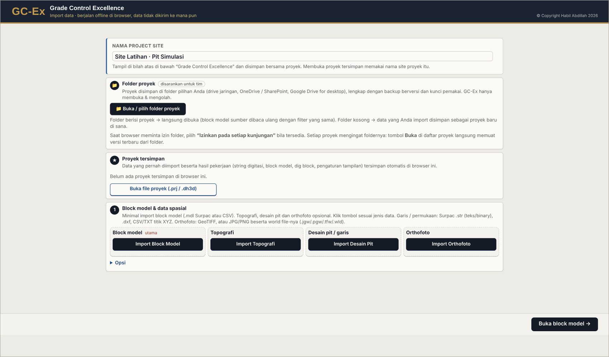
Gambar 1. Halaman muka GC-Ex Block Model: nama project site, folder proyek, proyek tersimpan dan impor data.
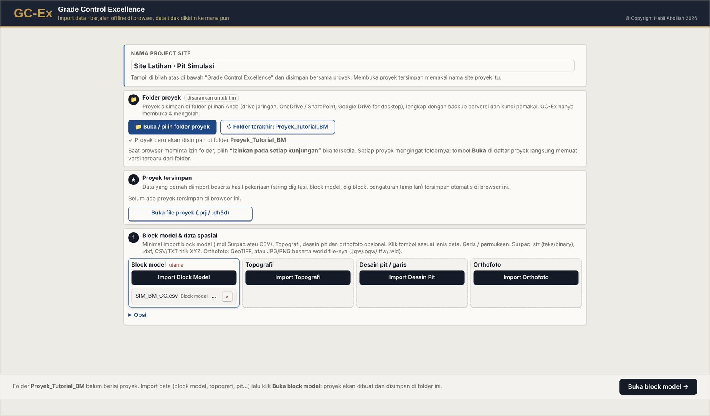
Gambar 2. Block model dipilih; file sumber disalin ke folder proyek sumber/.
3Mengenal tampilan
Di kiri ada Project Tree (urut langkah kerja, angka 1–10) dan Properti (isi node yang dipilih). Bilah atas: logo GC-Ex / BLOCK MODEL, Grade Control Excellence + nama project site, Proyek, arah pandang, menu Sayatan (Sayatan 2D / 3D), Ortho, Layer, Gelap, PNG.
Gambar 3. Bilah atas GC-Ex Block Model.
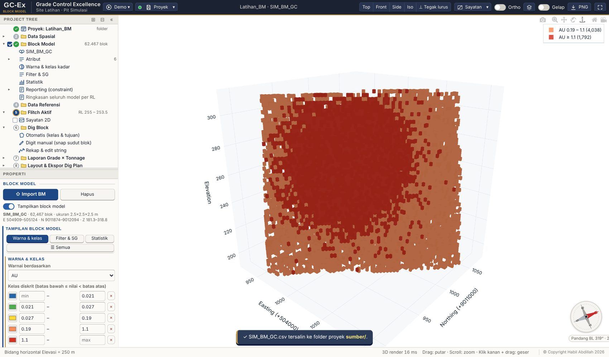
Gambar 4. Block model dengan filter AU ≥ 0,19 (Block Model → Filter & SG): ore shoot kadar tinggi (merah) di tengah vein.
Project Tree → Block Model → Warna & kelas kadar: kelas diskrit dan warnanya (Gambar 5).
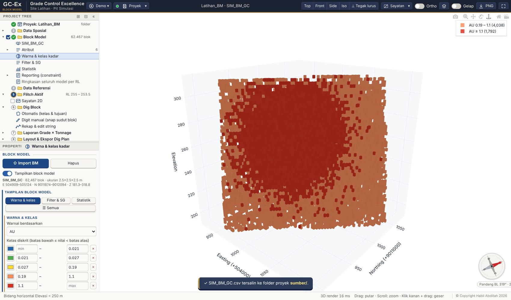
Gambar 5. Warna & kelas kadar AU.
4Flitch aktif & Sayatan 2D
Project Tree → Flitch Aktif: isi Tinggi flitch 2,5 dan RL atas 292.5 (Gambar 6).
Klik Terapkan flitch: GC-Ex membuka Sayatan 2D tampak atas pada RL tengah flitch; blok dilukis sebagai gambar sehingga zoom & geser ringan.
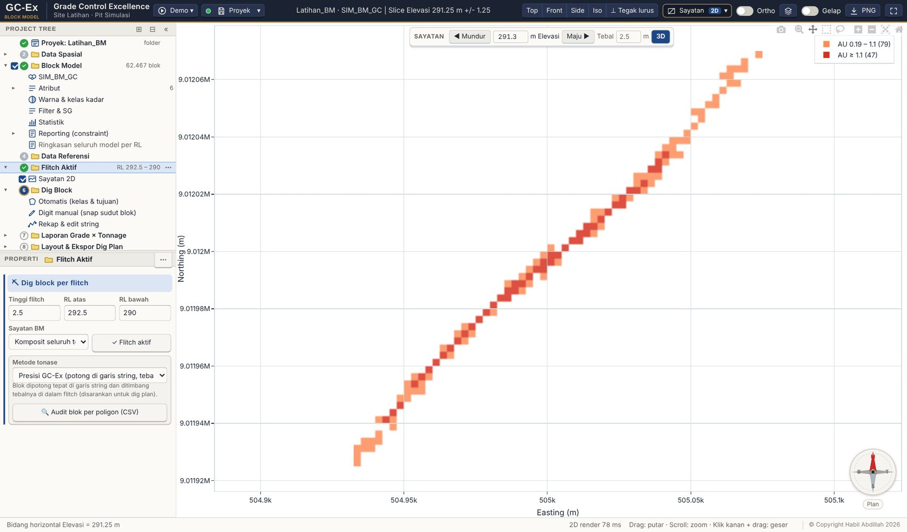
Gambar 6. Flitch RL 292.5 – 290 di Sayatan 2D.
Tips Menu Sayatan → Pilih arah sayatan di tampak atas membuka jendela 3D tampak atas; tarik garis P1 → P2 langsung di atas data untuk sayatan vertikal.
5Dig block otomatis
Project Tree → Dig Block → Otomatis (kelas & tujuan). Aturan kelas (string number, warna, material) dan Tujuan (DEST) per material diatur di sini.
Klik Buat dig block otomatis (Gambar 7).
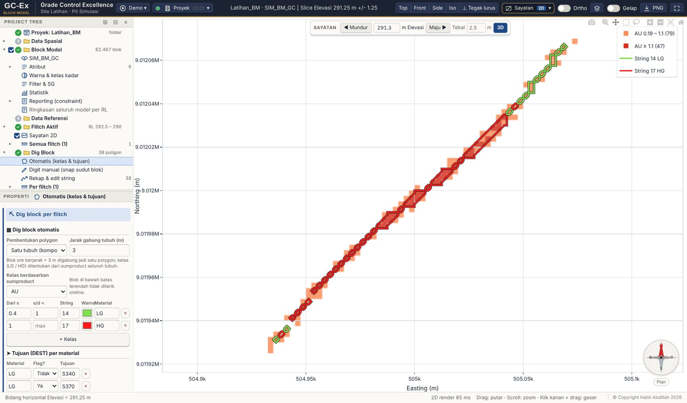
Gambar 7. 38 dig block otomatis di flitch RL 292.5 – 290: HG → R418, LG → S340.
Mengapa? Dig block mengikuti batas sudut blok GC, lalu dihaluskan dan celah kecil disatukan sesuai lebar alat gali.
6Additional flagging (garis ganda)
Additional flagging menggantikan aturan “sulfida / material SxS”. Satu aturan = nama flag + unsur + operator + COG. Bila komposit unsur di dalam poligon (rata-rata tertimbang tonase) melewati COG, seluruh poligon diberi flag dan digambar dengan garis ganda.
Klik Perbarui garis ganda. Poligon ber-flag mendapat garis kedua di sebelah dalam (Gambar 9).
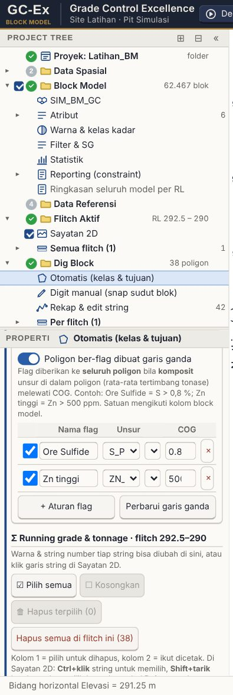
Gambar 8. Tabel aturan additional flagging.
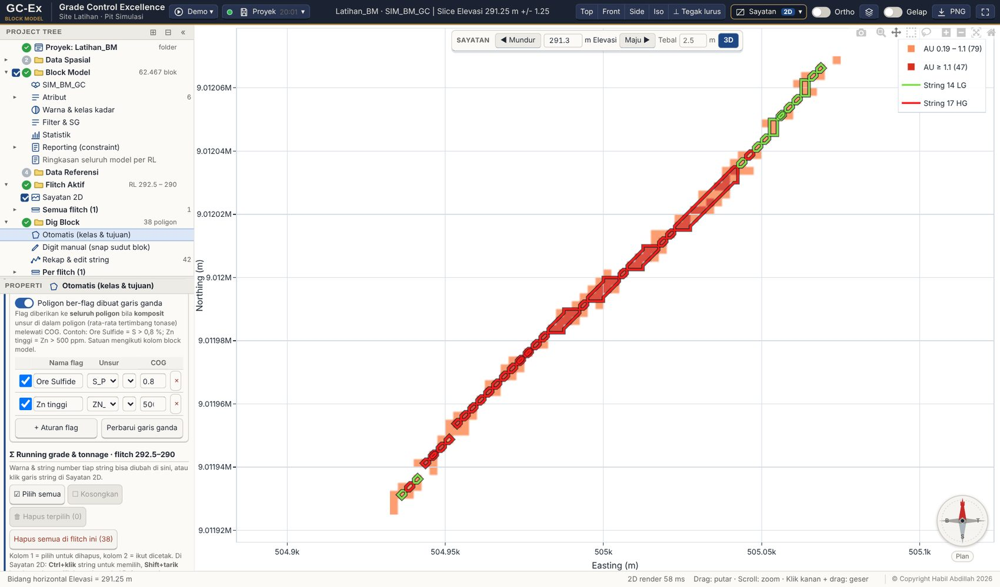
Gambar 9. Dari 38 dig block, 4 ber-flag Ore Sulfide (komposit S > 0,8 %) dan bergaris ganda.
Tips Kolom Flag? di aturan Tujuan (DEST) memakai flag ini, mis. LG + flag → stockpile sulfida. Nama flag ikut di label dig plan, PDF, daftar dig block (⚑) dan Project Tree. Proyek lama: pengaturan sxs & batas otomatis menjadi aturan Ore Sulfide.
7Digit manual & rekap string
Dig Block → Digit manual (snap sudut blok): klik Mulai, klik sudut-sudut blok di Sayatan 2D, klik titik pertama untuk menutup. Tonase & kadar dihitung langsung.
Dig Block → Rekap & edit string (Gambar 10): tabel semua string (tampil, nomor, keterangan, titik, panjang, bidang) dengan ✎ edit bentuk dan × hapus. String baru dibuat di bagian bawah panel.
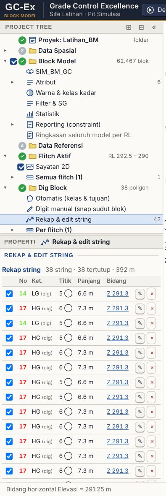
Gambar 10. Rekap & edit string.
8Laporan grade × tonase
Project Tree → Laporan Grade × Tonnage → Running grade & tonnage (Gambar 11): ton, kadar dan metal per dig block flitch aktif, dikelompokkan per tujuan.
Elemen laporan & kadar tonase: centang unsur tambahan (S_PCT, ZN_PPM, CU_PPM) agar ikut tabel, CSV, PDF dan register.
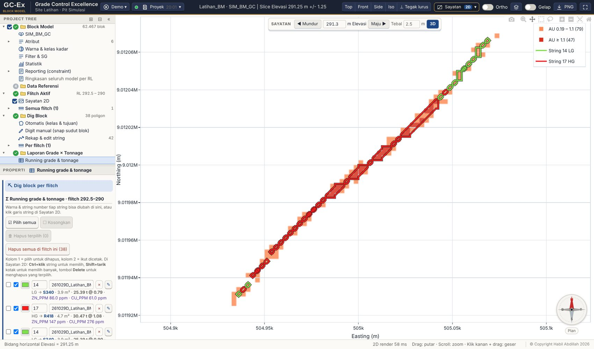
Gambar 11. Running grade & tonnage flitch aktif.
9Review flitch per flitch di Project Tree
Setiap menu punya node Per flitch yang dihitung dari poligon tersimpan; flitch aktif tidak berubah saat menghitung. Kerjakan flitch kedua (RL atas 295) dengan langkah yang sama, lalu tinjau keduanya.
Dig Block → Per flitch (Gambar 12): tiap flitch menampilkan jumlah DB dan ton @ kadar. Buka satu flitch: daftar poligon dengan ton @ kadar dan ⚑ flag (Gambar 13).
Klik poligon: flitch-nya dibuka di Sayatan 2D dan poligon disorot (Gambar 14). Menu …: Edit bentuk, Hapus.
Laporan Grade × Tonnage → Per flitch (Gambar 15): ton @ kadar per flitch dan per material → tujuan. Rekap semua flitch (CSV): satu baris per dig block di semua flitch.
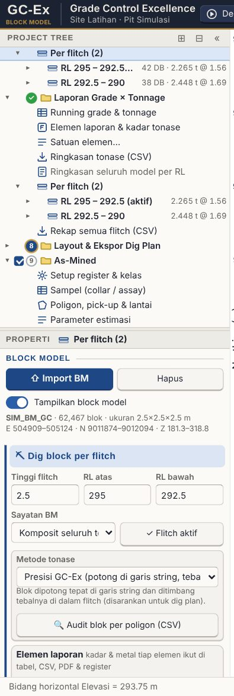
Gambar 12. Dig Block → Per flitch.Gambar 13. Isi satu flitch: poligon dengan ton @ kadar dan flag.
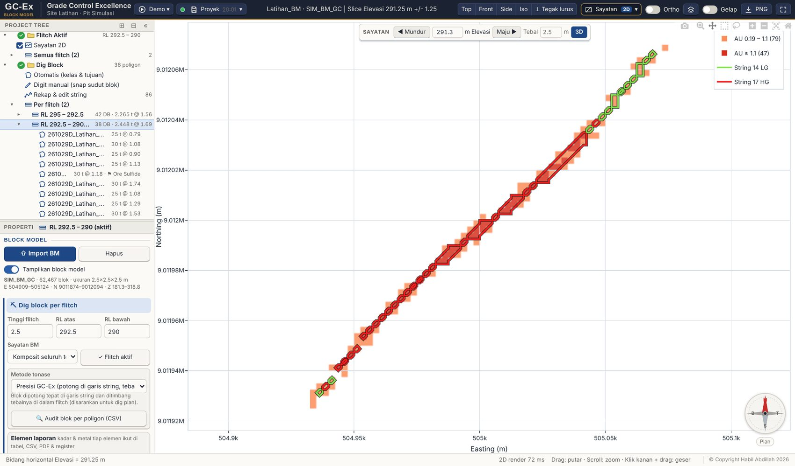
Gambar 14. Klik poligon di Project Tree: flitch dibuka dan poligon disorot.
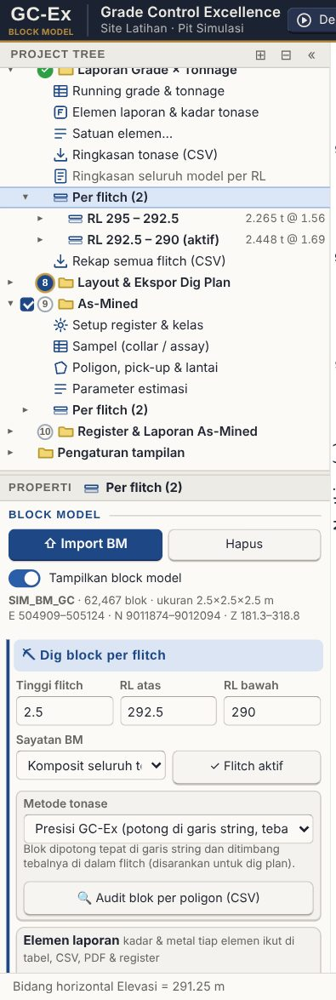
Gambar 15. Laporan → Per flitch dan Rekap semua flitch (CSV).
Flitch
Dig block
Ton
AU (g/t)
Ber-flag
295 – 292.5
42
2.265
1,56
2
292.5 – 290
38
2.448
1,69
4
CSV rekap berisi 80 baris (satu per dig block).
10Layout & ekspor dig plan
Project Tree → Layout & Ekspor Dig Plan → Layout & plot PDF (Gambar 16): judul, skala, elemen laporan, tabel tonase; PDF siap cetak.
Export STR / DXF (Surpac) untuk string dig block; Simpan gambar PNG untuk tampilan saat ini.
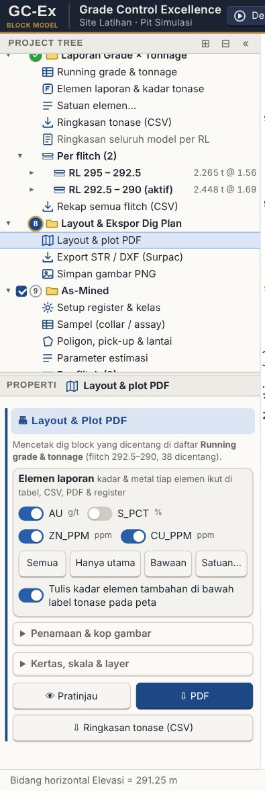
Gambar 16. Layout & plot PDF.
11As-mined: rencana vs aktual
Sesudah penambangan, batas aktual dicatat sebagai poligon as-mined (pick-up survey, file STR / DXF / CSV, atau digit manual) lalu dihitung dengan model GC + koreksi sampel. Di latihan ini poligon aktual dibuat dari dig block yang bergeser 0,6 m (simulasi penggalian).
Project Tree → As-Mined → Poligon, pick-up & lantai: import pick-up / boundary atau digit manual (Gambar 17).
As-Mined → Per flitch (Gambar 18): tiap flitch menampilkan selisih Δ; di dalamnya Rencana (dig block) dan Aktual (as-mined) beserta poligon. Flitch RL 292.5 – 290: rencana 2.448 t @ 1,69, aktual 2.430 t @ 1,38.
Klik flitch: dibuka di Sayatan 2D dengan dig block (rencana) dan poligon as-mined (aktual) bertumpuk (Gambar 19).
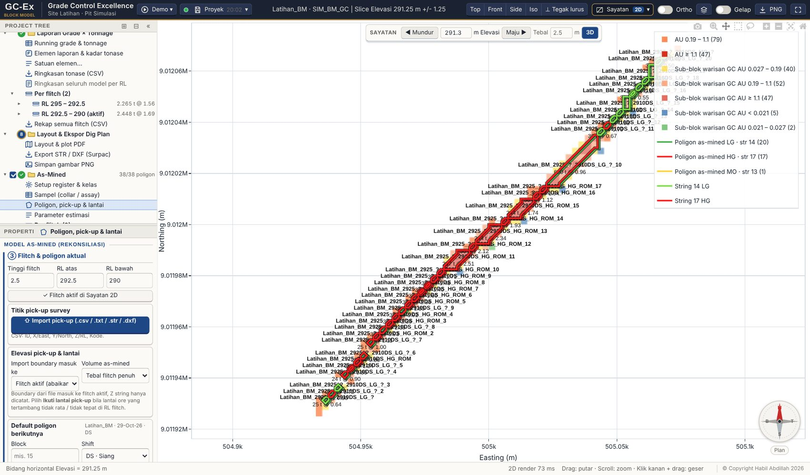
Gambar 17. Poligon as-mined di flitch aktif.
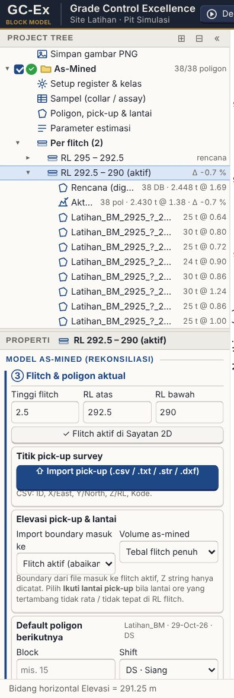
Gambar 18. As-Mined → Per flitch: selisih, rencana dan aktual.
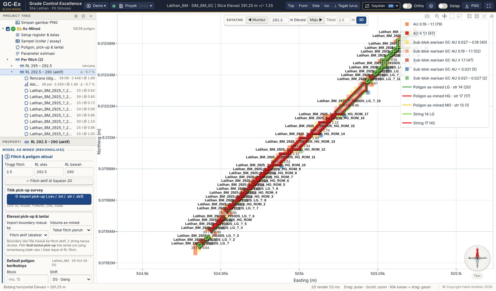
Gambar 19. Rencana (dig block) dan aktual (as-mined) bertumpuk.
Mengapa? Kadar aktual lebih rendah karena poligon aktual bergeser keluar dari vein sempit: dilusi. Inilah yang ingin dilihat rekonsiliasi flitch per flitch.
12Register, 3D hasil kerja & rekonsiliasi
Project Tree → Register & Laporan As-Mined → Register poligon (Gambar 20): kode poligon, BCM, ton, kadar, ritase; Kirim register ke Excel, CSV, Report rekonsiliasi (PDF).
3D hasil kerja: prisma dig block, poligon as-mined dan sub-blok model as-mined per flitch (Gambar 21). Rekap & model gabungan (.mdl) menggabungkan semua flitch ke satu block model Surpac.
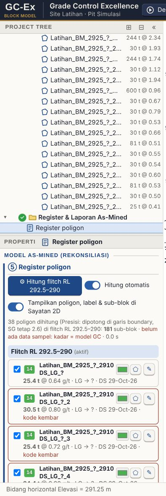
Gambar 20. Register poligon as-mined.Gambar 21. 3D hasil kerja: dig block (rencana) dan as-mined (aktual).